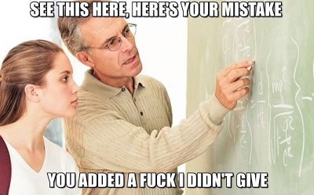
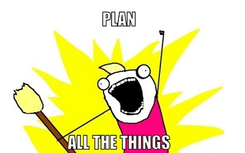
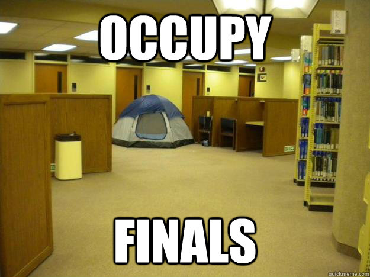
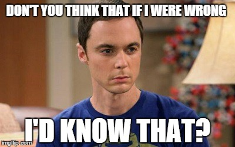

"I Bombed My Exam, Now What?"
Written by Piero Pretto, SFA Graduate
First of all, don’t panic.
Bombing an exam is not the end of the world. With a little bit of discipline and help from your professor you can get back on track. Here’s what worked for me during my tenure as a SFA student.
1) See your professor

SEE YOUR PROFESSOR NOW. (Don’t wait till the last week before finals - they hate that shit.) Talking to your instructor can shine some light on what went wrong. Is there a subject your professor is particularly anal on? If it’s an essay you bomb, ask your professor what you could have done to write an “A-worthy” essay. What can be done for extra credit? Lastly, ask them what to expect on the next upcoming exam. This will allow you to laser in on the important stuff so you’re not overwhelmed with trying to master everything.
2) Do a little math
Most classes are graded on a point system of sorts. You can cheat that system by focusing your energy on the assignments that count towards the most points. Ask yourself:
“What’s the average grade I need to make on my other exams if I’m going to make an A?”
“Okay, what about a B?”
When your next grade comes in, crunch your numbers again. If you need help doing the math, simply email us at heminotesinfo@gmail.com.
3) Buy an “appointment” calendar.

Head to the Staples next to Walmart on North Street and invest in a really good “appointment” calendar. This will allow you to break your to-do list into 15 minute “chucks”. Most students struggle with time management. An appointment calendar puts your entire week into perspective, giving you the flexibility of moving tasks around to various time slots when necessary.
4) Find your “study zone”

My favorite place to study was in a secluded desk along the walls of the Steen Library. This tucked me away from any social distractions. Everyone’s place will be different but you need an area that guards you from all possible distractions. Make it a habit to go there often. Let this be your “study zone.”
5) Partner up with someone who did well.

The beauty of HemiNotes is it allows you to see how other students prepared for the class you're taking. If we don’t carry notes for your class, find someone who did well on the exam you failed and ask them specifically how the prepped. You may be surprised to find what you can learn from other students (Pro Tip - If you have Dr. Ballenger for MKT 351, I played online poker in all his lectures and studied solely the book. I made an A.)
About HemiNotes:
HemiNotes is designed to help SFA students share and compare class notes online. Learn more »